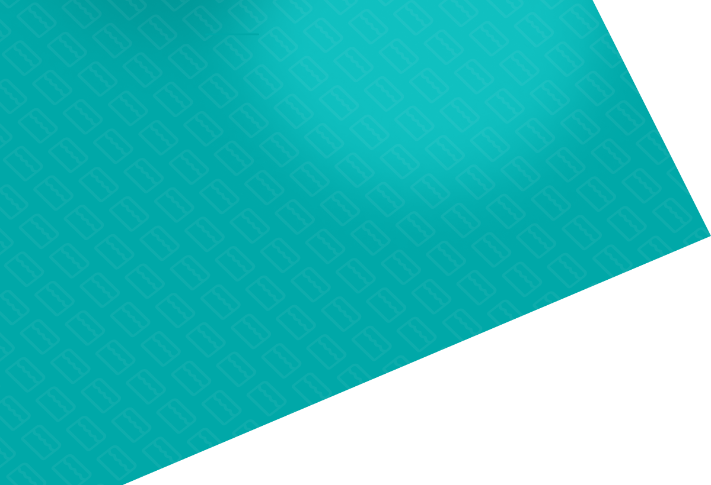
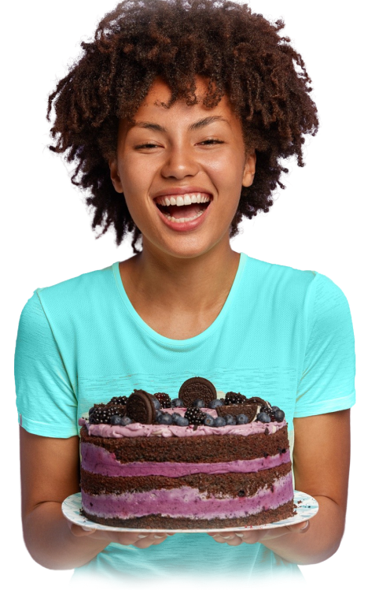

Sobre nós
Josiane é uma grande mulher, dona de uma das maiores empresas de bolos de São Paulo. Mas nem sempre foi assim. Josiane, de 42 anos, mãe solo de 2 filhos, trabalhava como atendente em uma loja de roupas, onde recebia um salário que não era suficiente para sustentar sua família. Então, um dia ela resolveu pedir demissão, para começar o seu próprio negócio. Decidiu fazer bolos na cozinha de sua casa, obtendo muito sucesso. Mas sua irmã resolveu copiá-la e acabou roubando seus clientes. Os negócios começaram a ir de mal a pior, porque por não ter um diferencial, alguns clientes optaram pelos bolos de sua irmã, levando seu negócio à beira da falência.